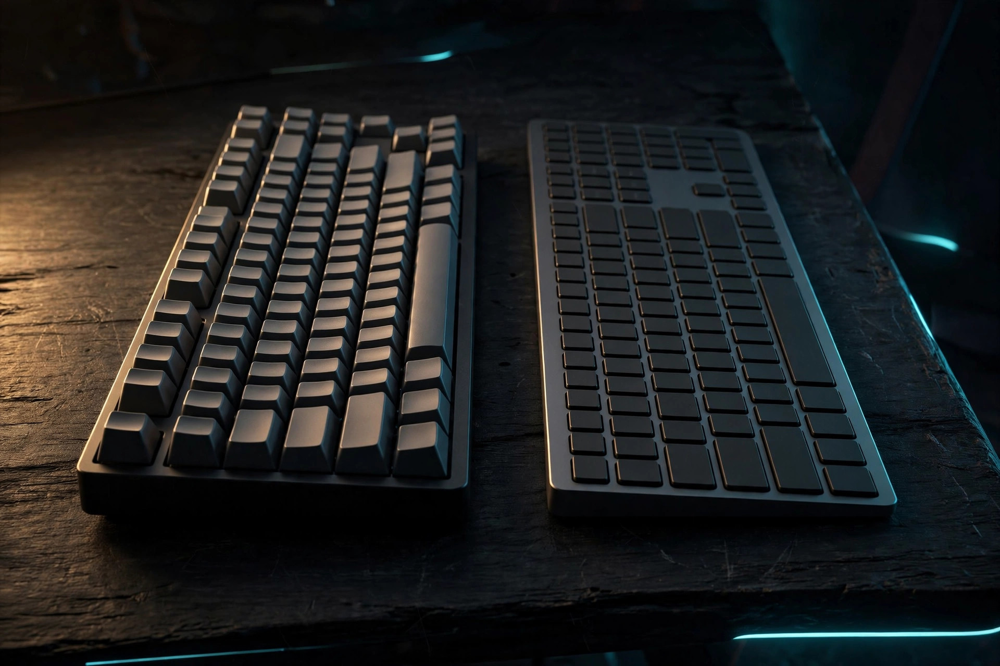

Mechanical vs membrane keyboards: a learner's guide

Nearly every mechanical-vs-membrane comparison on the internet is written for gamers. That's a problem if you're learning to touch type, because the question that matters to you is different: which keyboard helps you build clean, accurate finger habits? This guide answers that — with the honest trade-offs and real, dated prices on the cheap end of both types.
How they feel, in plain English
A mechanical keyboard puts an individual spring switch under every key. You feel a precise click or bump at the exact point the key registers — the key "fires" before it bottoms out. A membrane keyboard has a single rubber-dome sheet under all the keys: you press, the dome collapses, the key registers at the bottom of the travel with a soft, mushy feel and no distinct firing point.
The learning-specific comparison
| Mechanical | Membrane | |
|---|---|---|
| Feedback while learning | Clear actuation point teaches you when a key actually fired | Mushy bottom-out; harder to feel whether a press registered |
| Beginner adjustment | Real learning curve: you must learn to lift at the actuation point instead of pounding keys to the bottom — switchers often type slower with more errors at first | Feels familiar immediately; most learners already know this feel |
| Noise | Noticeably louder; clicky variants run 60-80 dB — a problem in shared rooms | Quiet; the safe pick for apartments and offices |
| Durability | 50-100 million keystrokes per switch; boards routinely outlast the computer | 5-10 million keystrokes; heavy daily use can wear a board out in 1-3 years |
| Long-term value | Repairable (swap a dead switch), customizable; often the cheaper board per year of ownership | Disposable — when the domes go, the board goes |
| Price of entry | ~$50 and up for decent beginner boards | ~$12-17 for a perfectly good full-size board |
Three beginner boards at real prices
Prices checked October 2026 (retailer prices fluctuate — treat these as the going rate, not a guarantee):
- Logitech K120 — $11.99 (membrane). The default cheap office keyboard for a reason: full-size, spill-resistant, utterly unremarkable in the best way. Perfectly fine to learn on.
- Redragon K671 — $49.90 (mechanical, hot-swap red switches). The classic budget entry to mechanical: full-size, hot-swappable switches so you can replace a dead one instead of the board, anti-ghosting for all keys.
- Keychron K2 V2 — $59.99 (mechanical, wireless, 75% layout, on sale from $84.99). The step up: wireless plus wired, compact layout, and the brand most often recommended to beginners who want a board they'll keep for years.
Which to pick: the decision shortcut
- On a tight budget or unsure you'll stick with it → membrane. The K120-class board costs less than a pizza. Keyboard retailers themselves give this advice: start with membrane on a budget, invest in mechanical when you have money to spare.
- Committed to learning and typing hours a day → mechanical. The durability math wins (your board won't die in 18 months of heavy use), the actuation feedback genuinely helps accuracy once you're past the adjustment period, and repairability makes it a buy-once purchase.
- Shared room, night owl, or noise-sensitive household → membrane or a silent-switch mechanical. A clicky board at 60-80 dB will make you unpopular fast.
- Learning on a laptop → learn on the laptop. Don't buy a board to "fix" your typing; the number row and your finger habits transfer to any keyboard. Buy a board when you want a better daily driver, not as a learning prerequisite.
Why no step-by-step here: this is a buying-decision guide, not a practice routine. Once your board is on the desk, the home-row fundamentals and free practice methods guides are where the actual learning happens.